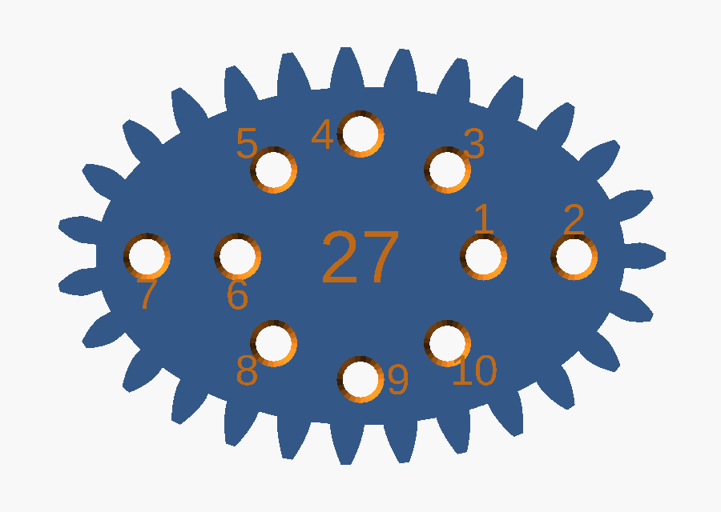
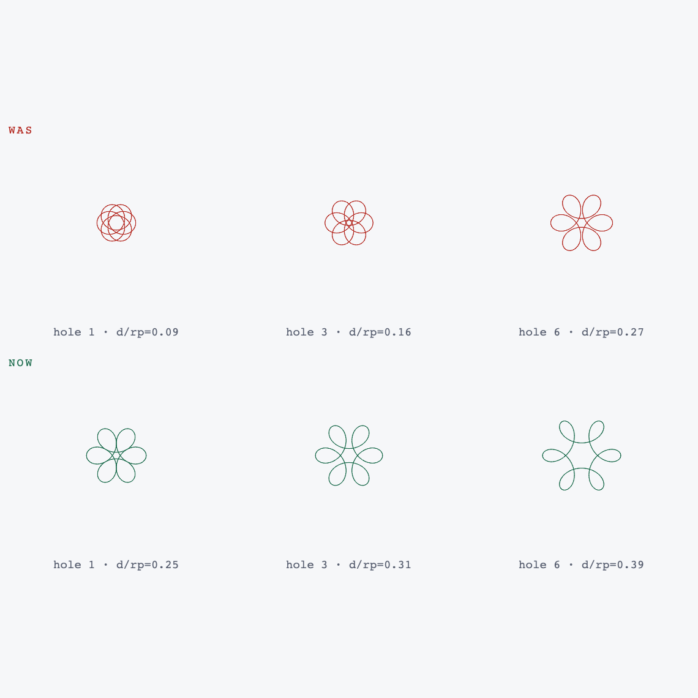
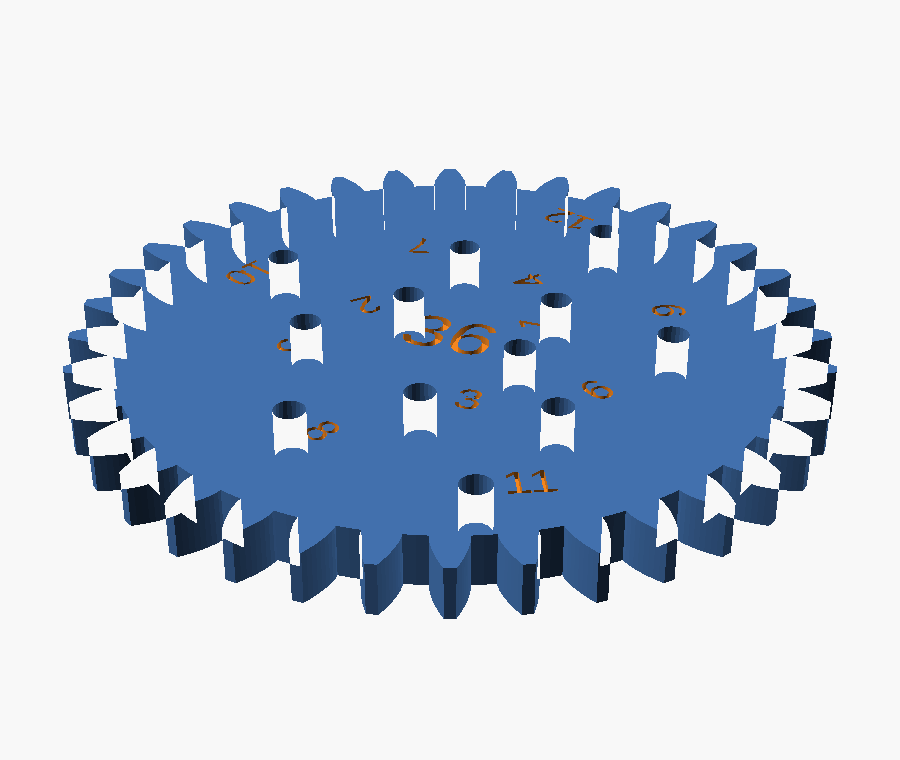
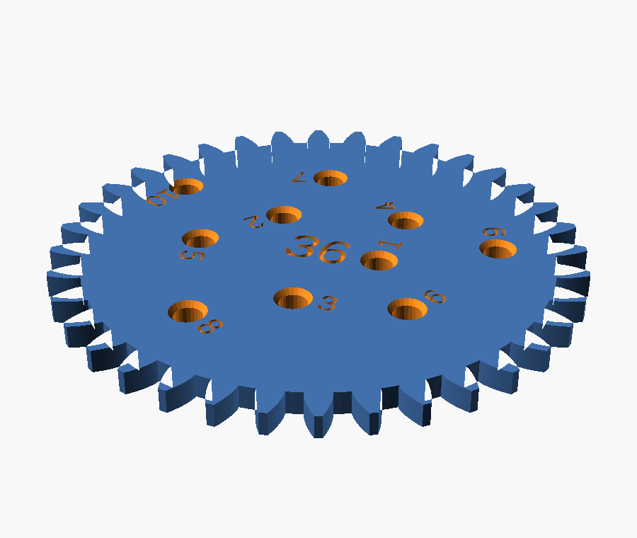

the report
The spirograph disks or objects that the pen will go into need to be refined. When I print them they are too narrow for a pen to go through. I think the original spirograph had a countersunk shape around each pen-hole so it was easier to draw with. Richard, first report
Two faults named in one sentence: the hole is too small, and its top edge is a square-cut rim a pen has to be aimed into rather than dropped into. The model had them as plain 2.4 mm circles cut straight through a 4 mm plate.
Every section on this page is
projection(cut = true) through the plane
y = 0, which passes exactly through the centre of pen
hole 1. The notches along the top edge are the debossed hole number, cut
by the same plane. Nothing here is drawn by hand.
What follows is two rounds, because the first fixed a real fault and still left the tool unusable. That second report is step six.
the bore
A hole modelled at 2.4 mm does not print at 2.4 mm. The perimeters are laid down on the inside of the path and squash inward, so a small hole always comes out undersize. 2.4 was already at the edge; the print pushed it over.
/* [Wheels] */ -pen_hole_d = 2.4; // suits a 0.5 to 0.7 mm gel pen. Measure yours +pen_hole_d = 3.0; // bore. 2.4 measured too tight once printed. Measure yours
This is the calibration knob, and everything downstream derives
from it: how far the outermost hole sits from the rim
(pen_r_max), how many holes a wheel gets
(pen_count), and the spacing rule in step five. Change this
one number and the rest re-derives. Nothing is hard-coded to it.
Worth saying plainly: 3.0 mm was an estimate for a gel pen after shrinkage, not a measurement. It turned out not to be the binding constraint at all.
the funnel
The second fault named in the report. A shop-bought spirograph countersinks every hole so the pen finds it without aiming and can lean without its shoulder catching the rim. The old model cut a flat circle out of a 2D outline before extruding it, which cannot express a funnel at all, so the hole became a 3D cut.
// A straight bore with a funnel around the top, the way a shop-bought // spirograph is countersunk: the pen tip drops in instead of being aimed, // and it can lean without the printed rim catching on its shoulder. // Cut in 3D, so every wheel subtracts this rather than a flat circle. module pen_bore() { translate([0, 0, -0.5]) cylinder(d = pen_hole_d, h = wheel_thickness + 1, $fn = 24); translate([0, 0, wheel_thickness - pen_cs_depth]) cylinder(d1 = pen_hole_d, d2 = pen_hole_d + 2 * pen_cs_rim, h = pen_cs_depth + 0.01, $fn = 24); }
One module, subtracted by both the circular wheels and the three
shapes. The old code wrote the hole geometry out twice, once in
pen_spiral() and once inline in nc_wheel(), so a fix
to one would have left the other wrong. That is why the diff deletes as well as
adds.
what it broke
A wider hole with a funnel round it needs more room than a narrow one. On the eleven circular wheels there was room to spare. On the ellipse and the trefoil there was not, and this part of the job was not in the request.
The three non-circular wheels carry hand-generated hole tables laid out on a 2.5333 module grid, which at module 1.5 puts hole centres 3.8 mm apart. A 3.0 mm bore with a 4.0 mm funnel and two perimeters of wall between neighbours needs 4.8 mm. At 3.8 the funnels merge into a groove — and a pen that can slide from one hole to the next does not merely look wrong, it ruins the drawing.


| ellipse | 20 → 10 holes |
| trefoil | 14 → 8 holes |
| egg — already 4.98 mm apart | 8 → 8 holes |
| eleven circular wheels | unchanged |
The spacings those tables offer are multiples of 3.8 mm, so it is all or every other; no arrangement keeps 20 holes and fits a funnel. Fewer usable holes beat more holes the pen cannot sit in.
the thinning
Rather than hand-edit three generated tables, the model drops the crowding itself. It walks each table backwards and keeps a hole only when it clears everything kept so far.
function pen_pitch_min() = pen_hole_d + 2 * pen_cs_rim + 0.8; function crowded(h, kept) = len([ for (k = kept) if (gear_module * norm([k[0] - h[0], k[1] - h[1]]) < pen_pitch_min()) 1 ]) > 0; function thin(hs, i = 0, kept = []) = i >= len(hs) ? kept : thin(hs, i + 1, crowded(hs[i], kept) ? kept : concat(kept, [hs[i]])); function nc_holes(sh) = rev(thin(rev(sh[6])));
Backwards matters. Each ray in those tables is listed inner to outer, and the outermost hole draws the widest figure, so working from the end of the list is what saves it. The result is reversed back so the numbering still counts outward. The threshold is derived, not typed: bore + flare + 0.8 mm of wall, where 0.8 is two perimeters at a 0.4 mm nozzle.
Because it is derived it undoes itself. Raise
gear_module to 2.0 and the same tables come out at 5.07 mm
centres, above the threshold, and every dropped hole returns with no edit.
still not right
I still can't get the pen to touch the paper comfortably. The countersink isn't sufficient and making it wider will reduce the space we have for pen holes on the shapes. Richard, second report
Round one widened the hole and relieved its rim, and the pen still would not reach the paper. Hole diameter was never the binding constraint. Plate thickness was.
A pen is a cone. For the nib to touch paper it has to pass the whole plate, so what must clear the bore is not the tip but the pen's own diameter one plate-thickness back from the nib. At 4 mm back most gel pens are already into the barrel taper and wider than 3 mm, so the pen wedges partway down and hovers. A countersink only relieves the top 1 mm, so it never reaches the part of the bore doing the wedging — exactly what the second report says.
Both obvious levers were blocked. A wider bore or a deeper funnel would each buy a little clearance, and both spend it out of the hole spacing on the ellipse and trefoil that step four had already paid for once.
the plate
Thinning is the one lever that costs nothing already spent. Hole spacing is a radial constraint with no relationship to thickness, so the ellipse and trefoil keep every hole step five left them.
-wheel_thickness = 4; +wheel_thickness = 2.5; -pen_cs_depth = 1.0; // how deep the funnel cuts +pen_cs_frac = 0.6; // ...as a fraction of the plate, so 1.5 mm here
| plate | 4.0 → 2.5 mm |
| funnel depth | 1.0 → 1.5 mm |
| straight bore left to guide the pen | 1.0 mm |
| holes lost to this change | none |
| ring, and its 7 mm toothed bore | untouched |
| whole set, print time | 13.0 → 10.7 h |
| whole set, filament | 62.8 → 53.8 m |
2.5 mm is near a shop-bought wheel. The teeth are 3.375 mm tall, so tooth engagement is nowhere near the limit, and the ring's internal teeth already run the full 7 mm of ring-plus-lip height, so nothing about the ring had to move.
This is the number that is still a guess. Take a caliper to
your pen 2 mm back from the nib; if that is under 3 mm the
plate is thin enough. If not, drop wheel_thickness again —
2.0 prints perfectly well. One 24T wheel settles it in about twenty minutes
rather than ten hours.
the layout
I also note that the layout of the holes is currently not likely to create spirals or other compelling shapes. Richard, same report
Half right, and the half that is right can be pointed at exactly. Rather than agree, the figure every hole traces was computed and drawn.
What a hole draws depends on how far out it sits as a fraction
of the pitch radius, written d/rp below. Near the middle it
traces something close to a circle whatever the wheel; out near the rim it
traces the sharp cusped star a spirograph is bought for. Angular position only
rotates the result, so the golden-angle scatter costs nothing.
Across the set the variety is real — lobe counts of 3, 4, 6,
8, 12, 16, 24 and 32, and dense rosettes on the 52 and 63. But
pen_r0 was an absolute 5.5 mm, and an absolute radius
means something different on every wheel: 31% of the pitch radius on the 24,
and a useless 9% on the 80. The innermost holes of the big wheels drew
cramped knots worth none of the plate.

// The figure a hole draws is set by how far out it sits as a fraction of the // pitch radius, not by its distance in millimetres. function pen_r_min(n) = max(pen_r0, pen_r0_frac * gear_module * n / 2);
| 80T range, d/rp | 0.09–0.89 → 0.25–0.89 |
| 80T and 72T hole count | 24, unchanged |
| 24T — the label still binds | 0.31–0.65, unchanged |
| holes across the set | 176 → 162 |
The fourteen holes dropped are all near-circles. The two biggest wheels lose nothing and gain a usable range.
the check
Two funnels running into one another is a fault no render, no slicer and no bed check would report. The geometry stays a clean manifold, it fits the plate, it slices. It just draws badly. So the model proves the spacing on every render.
for (t = wheel_teeth)
assert(min_pitch(wheel_hole_pts(t)) >= pen_pitch_min(),
str(t, "T: pen holes are closer than their countersinks are wide"));
for (s = nc_shapes)
assert(min_pitch(nc_hole_pts(s)) >= pen_pitch_min(),
str(s[0], ": pen holes still crowd after thinning"));
An assertion that has never failed is not evidence of anything, so it was made to fail on purpose — squeeze the spiral, and the smallest wheel is the first to go:
$ openscad -D "pen_spiral_dr=0.4" models/spirograph.scad ERROR: Assertion '(min_pitch(wheel_hole_pts(t)) >= pen_pitch_min())' failed: "24T: pen holes are closer than their countersinks are wide"
This is the step the walkthrough on the main page calls verify, and the reason it exists: for a part that has to work, the checks that matter are the ones you write yourself. Neither round of this job would have been caught by anything downstream of CAD.
the proof
Everything below ran after both rounds, on this machine.


$ python models/verify_spirograph.py 24T 24 0.000000 pass ... 80T 80 0.000000 pass ellipse 27 0.000000 pass egg 20 0.000000 pass trefoil 23 0.000000 pass 14/14 parts mesh cleanly no parts overlap on the sheet
| full sheet renders | manifold, NoError |
| parts meshing | 14 / 14 |
| spacing assertions | pass, and proven to fail |
| test suite | 170 passed |
| plates, all proven on the bed | 5 / 5 |
| print time, whole set | 10.7 h |
Sliced for a Creality Ender-3 V3 SE, 0.4 nozzle, PLA. Every
extruding move in all five G-code files was read back and confirmed inside the
printable area. plate_2 sits 2.2 mm from the bed edge and
wants a brim.
Not checked, and not checkable from here: whether 2.5 mm and 3.0 mm suit your pen. That needs one wheel printed and a caliper. Both are single numbers, and the hole count, rim clearance, thinning and pattern range all follow them.